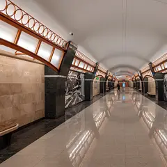
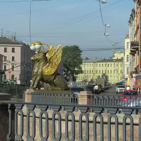
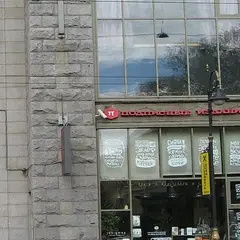
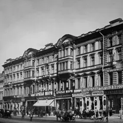
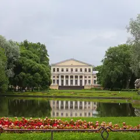
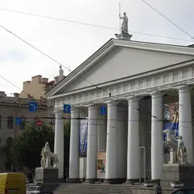
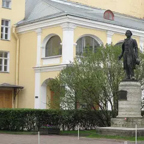
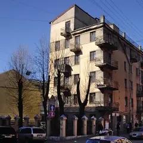
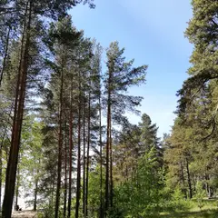

Подборку собрали 26 ноября, прошедшие события скрыты. Свежая афиша — на главной
Подборка · данные на 26 ноября
Недорогое свидание в Петербурге
49 планов, где каждая остановка обходится примерно до 1 500 ₽ на человека, а часть и вовсе бесплатна: парки, набережные, смотровые площадки. Ниже — ещё 127 мест для свидания с таким же чеком и 3 события с бесплатным входом в ближайшие две недели. Цены — ориентир: меню и билеты лучше проверить перед выходом.
- 49 планов
- 127 мест
- 3 бесплатных события
Планы до 1 500 ₽ на человека 24 из 49
- Парк Александрия · Парк · ж/д Новый Петергоф
- 8 минут пешкомДворец Коттедж · Музей
Сначала идёте по аллеям парка к заливу, потом заходите в маленький дворец в шести минутах. Тихо, без толп парадного Петергофа.
Открыть план: Александрия и дворец у заливаПозвать сюда: Александрия и дворец у залива
Фото: Egregiu, CC BY-SA 4.0 · Wikimedia Commons
- Museum Route 66 · Музей · м. Невский проспект
- 3 минуты пешкомСпас на Крови · Музей
- 9 минут пешкомЧАО Какао · Какаочная
Фотографируетесь в декорациях старого кино, проходите мимо Спаса на Крови и греетесь какао в пяти минутах. Лёгкий план, где есть чем заняться и о чём говорить.
Открыть план: Америка 60-х и какаоПозвать сюда: Америка 60-х и какао
Фото: Рустам Абдрахимов, CC BY 3.0 · Wikimedia Commons

- Музей «Аптека доктора Пеля» · Историческая аптека-музей · м. Василеостровская
- 24 минуты пешкомСтанция метро «Горный институт» · Новая станция метро
Склянки и шкафы старой аптеки на 7-й линии, потом новая станция «Горный институт» со светильниками-кристаллами.
Открыть план: Аптека Пеля и станция-кристаллПозвать сюда: Аптека Пеля и станция-кристалл
Фото: Florstein, CC BY-SA 4.0 · Wikimedia Commons
- Дом с башнями · Доходный дом-«замок» · м. Петроградская
- 6 минут пешкомНабережная реки Карповки · Набережная
- 5 минут пешкомМечта · Кофейня
От дома-замка на площади спускаетесь к Карповке и идёте вдоль воды, а греться заходите в кофейню — она в пяти минутах от набережной.
Открыть план: Башни, Карповка и матчаПозвать сюда: Башни, Карповка и матча
Фото: Grigorius m, CC BY-SA 4.0 · Wikimedia Commons

- Думская башня · Смотровая площадка · м. Невский проспект
- 6 минут пешкомНабережная канала Грибоедова · Набережная
- 7 минут пешкомOy! · Коктейльный бар
Поднимаетесь на башню к закату, спускаетесь к каналу Грибоедова и минут за десять доходите до коктейльного бара. Сначала виды, потом разговор.
Открыть план: Башня над Невским и коктейлиПозвать сюда: Башня над Невским и коктейли
Фото: Vadim Indeikin, CC BY-SA 3.0 · Wikimedia Commons
- Театральная библиотека · Библиотека · м. Гостиный двор
- 2 минуты пешкомУлица Зодчего Росси · Улица
- 4 минуты пешкомOy! · Коктейльный бар
Заходите на выставку в старинную библиотеку, выходите прямо на идеально симметричную улицу Росси и через пять минут пешком садитесь в коктейльном баре.
Открыть план: Библиотека, улица Росси и коктейлиПозвать сюда: Библиотека, улица Росси и коктейли
Фото: Chirukhin Igor, CC BY-SA 4.0 · Wikimedia Commons
- DiDi · Галерея · м. Горный институт
- 13 минут пешкомЭрарта · Музей современного искусства
Небольшая частная галерея со свободным входом, затем десять минут пешком до большого музея современного искусства.
Открыть план: Галерея и Эрарта на ВасильевскомПозвать сюда: Галерея и Эрарта на Васильевском
Фото: Erarta, CC BY 3.0 · Wikimedia Commons
- Дворцовая площадь · Площадь · м. Адмиралтейская
- 4 минуты пешкомПышки на Большой Морской · Пышечная
Вечерняя прогулка по Дворцовой площади, а через три минуты — пышки, которые продают до 23:00.
Открыть план: Дворцовая и пышкиПозвать сюда: Дворцовая и пышки
Фото: Godot13, CC BY-SA 4.0 · Wikimedia Commons
- Masters Bookstore · Книжный об искусстве и дизайне · м. Чкаловская
- 23 минуты пешкомКаменный остров · Остров дач и особняков
Альбомы и кофе в Masters на Барочной, потом тихие аллеи и деревянные дачи Каменного острова.
Открыть план: Книжный об искусстве и Каменный островПозвать сюда: Книжный об искусстве и Каменный остров
Фото: Alexey Komarov, CC BY 3.0 · Wikimedia Commons
- Крейсер Аврора · Музей-корабль · м. Горьковская
- 14 минут пешкомЛетний сад · Сад
Осмотреть корабль, затем перейти Неву по Троицкому мосту и гулять по аллеям сада: около пятнадцати минут пешком.
Открыть план: Крейсер и Летний садПозвать сюда: Крейсер и Летний сад
Фото: Anastasia Galyamicheva, CC BY-SA 4.0 · Wikimedia Commons
- Ледокол «Красин» · Музей-корабль · м. Горный институт
- 13 минут пешкомМонастырские пышки · Пышечная
Осмотреть ледокол «Красин» у набережной, а через десять минут вдоль Невы согреться пышками и кофе.
Открыть план: Ледокол и пышкиПозвать сюда: Ледокол и пышки
Фото: Andrey Korchagin, CC BY-SA 2.0 · Wikimedia Commons

- Музей флорариумов · Музей · м. Маяковская
- 4 минуты пешкомПодписные издания · Книжный магазин
- 8 минут пешкомКофейное · Кофейня
Разглядываете тропические мини-сады под стеклом, за пять минут доходите до большого книжного, а потом греетесь кофе по соседству.
Открыть план: Мини-сады и книги на ЛитейномПозвать сюда: Мини-сады и книги на Литейном
Фото: Екатерина Борисова, CC BY-SA 4.0 · Wikimedia Commons
- Дом Лидваля · Доходный дом, северный модерн · м. Горьковская
- 19 минут пешкомДом с башнями · Доходный дом-«замок»
- 10 минут пешкомМузей петербургского авангарда (Дом Матюшина) · Дом-музей
Совы и пауки дома Лидваля, замок с башнями на площади Толстого и деревянный дом Матюшина среди камня.
Открыть план: Модерн ПетроградкиПозвать сюда: Модерн Петроградки
Фото: Wolfgang Moroder, CC BY-SA 3.0 · Wikimedia Commons
- Музей Штиглица · Музей · м. Чернышевская
- 3 минуты пешкомCasimir · Кофейня
Роскошные залы музея Штиглица, а через две минуты — уютная кофейня с осенним меню, чтобы согреться супом или оладьями.
Открыть план: Музей Штиглица и тыквенный супПозвать сюда: Музей Штиглица и тыквенный суп
Фото: Lion10~commonswiki, CC BY-SA 4.0 · Wikimedia Commons
- Парадная с ротондой (дом Яковлева) · Парадная с ротондой · м. Сенная площадь
- 6 минут пешкомПышечная на Садовой · Пышечная
Заглянуть в парадную с ротондой на Гороховой, а через пять минут пешком согреться пышками у Апраксина двора.
Открыть план: Ротонда и пышкиПозвать сюда: Ротонда и пышки
Фото: Artyom Svetlov, CC BY-SA 4.0 · Wikimedia Commons
- Парадная с ротондой (дом Яковлева) · Парадная с ротондой · м. Сенная площадь
- 9 минут пешкомДом Флоу · Кофейня в особняке модерн
Круглая лестница с колоннами до купола, потом кофе на пяти этажах особняка с оранжереей на Садовой.
Открыть план: Ротонда на Гороховой и кофе в доме модернПозвать сюда: Ротонда на Гороховой и кофе в доме модерн
Фото: Artyom Svetlov, CC BY-SA 4.0 · Wikimedia Commons

- Музей-фотосалон Карла Буллы · Старинное фотоателье · м. Гостиный двор
- 2 минуты пешкомПышки из детства · Пышечная
Сначала старинное фотоателье на Невском, потом в двух минутах пешком — пышки с кофе, чтобы обсудить увиденное.
Открыть план: Старые снимки и пышкиПозвать сюда: Старые снимки и пышки
Фото: Karl Bulla, общественное достояние · Wikimedia Commons
- Café Alto · Кафе-кофейня · м. Гостиный двор
- 4 минуты пешкомМузей-фотосалон Карла Буллы · Старинное фотоателье
Кофе среди винтажной мебели в Café Alto, потом старинное фотоателье Буллы, где можно сняться в декорациях.
Открыть план: Фотоателье Буллы и кофе на КараваннойПозвать сюда: Фотоателье Буллы и кофе на Караванной
Фото: Karl Bulla, общественное достояние · Wikimedia Commons
- Центр искусства и науки ИТМО · Галерея · м. Спортивная
- 2 минуты пешкомМузей-квартира Куинджи · Музей
- 6 минут пешкомБиография · Кофейня
Сначала молодые художники о цифровой среде, через пару минут — лунные пейзажи Куинджи, а потом кофе в пяти минутах ходьбы, чтобы обсудить контраст.
Открыть план: Цифровое искусство и КуинджиПозвать сюда: Цифровое искусство и Куинджи
Фото: Andris Malygin, CC BY 3.0 · Wikimedia Commons

- Юсуповский сад · Сад · м. Садовая
- 5 минут пешкомПышечка · Пышечная
Прогулка по Юсуповскому саду, а через пять минут — пакет пышек и прогулка вдоль канала Грибоедова.
Открыть план: Юсуповский сад и пышкиПозвать сюда: Юсуповский сад и пышки
Фото: A.Z.Anisimov, CC BY-SA 4.0 · Wikimedia Commons
- Музей Набокова · Музей · м. Адмиралтейская
- 1 минута пешкомTeplo · Кафе
Коллекция бабочек в родовом особняке писателя на Большой Морской, а через дорогу — кафе-квартира с диванами и пледами.
Открыть план: Бабочки Набокова и кафе-квартираПозвать сюда: Бабочки Набокова и кафе-квартира
Фото: Vadim Zhivotovsky, CC BY 3.0 · Wikimedia Commons

- Манеж · Выставочный зал · м. Адмиралтейская
- 4 минуты пешкомTeplo · Кафе
Самая громкая выставка сезона в огромном зале у Исаакия, а потом 4 минуты пешком — уютное кафе с пледами, чтобы согреться и обсудить увиденное.
Открыть план: Выставка в Манеже и пледы в TeploПозвать сюда: Выставка в Манеже и пледы в Teplo
Фото: SERGiK73, CC BY-SA 3.0 · Wikimedia Commons

- Музей-квартира Пушкина · Музей · м. Адмиралтейская
- 3 минуты пешкомЧАО Какао · Какаочная
Кабинет и библиотека поэта у Конюшенной, а потом пара минут пешком — какаочная, где наливают густой горячий шоколад из окошка.
Открыть план: Квартира Пушкина и горячий шоколадПозвать сюда: Квартира Пушкина и горячий шоколад
Фото: Alexander Ardatov, CC BY 3.0 · Wikimedia Commons
- Кронштадт: Якорная площадь и Морской собор · Прогулочный район · м. Беговая
- дальше на метро или таксиОстров фортов · Парк
Морской собор и тихие улицы города-крепости, а потом — Остров фортов: маяк, аллея флота и форты на горизонте. Между точками — на автобусе или такси.
Открыть план: Кронштадт: собор и фортыПозвать сюда: Кронштадт: собор и форты
Фото: Валера37526, CC BY-SA 4.0 · Wikimedia Commons


Недорогие места для свидания 24 из 127
Гороховая ул., 57
Новое
Круглая лестничная клетка с шестью колоннами, уходящими к куполу; стены исписаны пожеланиями гостей. Главный кадр — снизу вверх по оси колонн. Жилой дом: днём пускают за небольшое пожертвование, приходить тихо и небольшой компанией.
Подробнее и маршрут: Парадная с ротондой (дом Яковлева)Позвать сюда: Парадная с ротондой (дом Яковлева)
Фото: Artyom Svetlov, CC BY-SA 4.0 · Wikimedia Commons
Каменноостровский пр., 35 (площадь Льва Толстого)
Новое
Две шестигранные башни Белогруда в духе английского замка держат всю площадь; на одной — циферблат со знаками зодиака. Силуэт эффектен в сумерках.
Подробнее и маршрут: Дом с башнямиПозвать сюда: Дом с башнями
Фото: Grigorius m, CC BY-SA 4.0 · Wikimedia Commons
Невский пр., 54
Новое
Интерьеры старинного фотоателье Буллы с небольшой экспозицией о мастере; в декорациях можно сниматься, бывают вечера с концертом. Лучше днём при дневном свете.
Подробнее и маршрут: Музей-фотосалон Карла БуллыПозвать сюда: Музей-фотосалон Карла Буллы
Фото: Karl Bulla, общественное достояние · Wikimedia Commons
Дворцовая площадь, 6-8
Импрессионисты, Матисс и Пикассо в светлых анфиладах под стеклянными крышами, плюс большие сменные выставки.
Подробнее и маршрут: Главный штаб ЭрмитажаПозвать сюда: Главный штаб Эрмитажа
Фото: Max A. Khlopov, CC BY-SA 3.0 · Wikimedia Commons
Садовая ул., 21А
Новое
Кофейня на всех пяти этажах модернового дома 1903–1904 годов: лестница модерн, исторические окна, зелень на первом этаже и мини-оранжерея на втором.
Подробнее и маршрут: Дом ФлоуПозвать сюда: Дом Флоу
Фото здания: Артём Светлов, CC BY-SA 4.0 · Wikimedia Commons
ул. Рубинштейна, 23
Квартира Сергея Довлатова на Рубинштейна: история писателя и Ленинграда 70-х в одном доме.
Подробнее и маршрут: Музей ДовлатоваПозвать сюда: Музей Довлатова
Фото: Kommunalka1912, CC BY-SA 4.0 · Wikimedia Commons
ул. Профессора Попова, 10
Новое
Деревянный дом среди каменной Петроградки, где в 1912 году Матюшин устроил штаб авангарда; мемориальные комнаты с работами его круга и Елены Гуро.
Подробнее и маршрут: Музей петербургского авангарда (Дом Матюшина)Позвать сюда: Музей петербургского авангарда (Дом Матюшина)
Фото: MaryannaNesina, CC BY 3.0 · Wikimedia Commons
Шпалерная ул., 43
Новое
Тёплый зимний сад с пальмами, кактусами и лианами — тропики посреди холодного сезона. Приятно зайти вдвоём, когда на улице слякоть.
Подробнее и маршрут: Оранжерея Таврического садаПозвать сюда: Оранжерея Таврического сада
Фото: Екатерина Борисова, CC BY-SA 4.0 · Wikimedia Commons
Приморский пр., 74
Молодой парк на берегу залива: длинный мол, вид на Лахта Центр и закаты прямо над водой — особенно хорош вечером.
Подробнее и маршрут: Парк 300-летия Санкт-ПетербургаПозвать сюда: Парк 300-летия Санкт-Петербурга
Фото: Germash19, CC BY-SA 4.0 · Wikimedia Commons
наб. канала Грибоедова, 2Б
Храм-музей, полностью покрытый мозаикой изнутри, — одна из самых ярких точек центра.
Подробнее и маршрут: Спас на КровиПозвать сюда: Спас на Крови
Фото: Рустам Абдрахимов, CC BY 3.0 · Wikimedia Commons
ул. Зодчего Росси, 2
Новое
Старинная библиотека с историей от XVIII века: сюда приходят на выставки, лекции и экскурсии. Тихий культурный повод для прогулки по центру вдвоём.
Подробнее и маршрут: Театральная библиотекаПозвать сюда: Театральная библиотека
Фото: Chirukhin Igor, CC BY-SA 4.0 · Wikimedia Commons
Миллионная ул., 25
Какаочная в двух шагах от Эрмитажа: густой горячий шоколад и авторское какао из окошка — согреться посреди прогулки.
Подробнее и маршрут: ЧАО КакаоПозвать сюда: ЧАО Какао
Фото здания: Александр Сигачёв, CC BY-SA 4.0 · Wikimedia Commons
Садовая ул., 54
Пейзажный сад у Сенной с большим прудом и островком; местные коты-старожилы встречают гостей, открыт с утра до позднего вечера.
Подробнее и маршрут: Юсуповский садПозвать сюда: Юсуповский сад
Фото: A.Z.Anisimov, CC BY-SA 4.0 · Wikimedia Commons
Кирочная ул., 8
Лютеранская церковь с выразительными голыми стенами: органные концерты, выставки, перформансы.
Подробнее и маршрут: АнненкирхеПозвать сюда: Анненкирхе
Фото: Екатерина Борисова, CC BY-SA 4.0 · Wikimedia Commons
ул. Профессора Попова, 2П
Старейший ботанический сад страны: дендрарий, японский сад и оранжереи с тропиками; осенью сюда приходят любоваться клёнами.
Подробнее и маршрут: Ботанический сад Петра ВеликогоПозвать сюда: Ботанический сад Петра Великого
Фото: Afanasovich, CC BY 4.0 · Wikimedia Commons
ул. Некрасова, 23
Уютный независимый книжный на Некрасова с кафе и мансардой, где легко засидеться с какао и книгой; есть и полка комиксов.
Подробнее и маршрут: Все свободныПозвать сюда: Все свободны
Фото: ELindas, CC BY-SA 4.0 · Wikimedia Commons
Петергоф, парк Александрия, 7
Новое
Небольшой неоготический дворец Николая I в парке Александрия: семейные интерьеры, террасы и окна на залив. Камерная альтернатива парадному Петергофу.
Подробнее и маршрут: Дворец КоттеджПозвать сюда: Дворец Коттедж
Фото: GAlexandrova, CC BY-SA 4.0 · Wikimedia Commons
Дворцовая пл.
Главная площадь города: Зимний дворец, арка Главного штаба и Александровская колонна; вечерняя подсветка — отдельное удовольствие.
Подробнее и маршрут: Дворцовая площадьПозвать сюда: Дворцовая площадь
Фото: Godot13, CC BY-SA 4.0 · Wikimedia Commons
Каменноостровский пр., 1–3
Новое
Курдонёр с совой на центральном фронтоне, зайцами, рысью и ящерицей в рельефах и балконными решётками-паутинами с пауками. Детали лучше видны в утреннем свете.
Подробнее и маршрут: Дом ЛидваляПозвать сюда: Дом Лидваля
Фото: Wolfgang Moroder, CC BY-SA 3.0 · Wikimedia Commons

ул. Рубинштейна, 7
Новое
Конструктивистский дом 1929–1931 годов с террасой пятого этажа под скатной кровлей и доской Ольге Берггольц на фасаде. Удобный ракурс — с угла Графского переулка.
Подробнее и маршрут: Дом-коммуна «Слеза социализма»Позвать сюда: Дом-коммуна «Слеза социализма»
Фото: Potekhin, CC BY-SA 3.0 · Wikimedia Commons
Елагин остров, 4Т
Остров-парк без машин: пруды, белки, дворец и Стрелка, где провожают солнце над заливом. Осенью — одно из лучших мест города.
Подробнее и маршрут: Елагин островПозвать сюда: Елагин остров
Фото: Александровы АГ, CC BY-SA 4.0 · Wikimedia Commons
Большая аллея, 10 (дача Свягина)
Новое
Тихие аллеи вдоль протоков, деревянные и каменные дачи модерна и готическая церковь Иоанна Предтечи у моста. Особенно хорош осенью и тёплым вечером.
Подробнее и маршрут: Каменный островПозвать сюда: Каменный остров
Фото: Alexey Komarov, CC BY 3.0 · Wikimedia Commons

пос. Комарово, Приморское ш., спуск к заливу от ж.-д. станции «Комарово»
Новое
Длинный песчаный берег с соснами на склоне и валунами в воде, у кромки — рыбацкие лодки; солнце садится прямо в залив. Рядом «Будка» Ахматовой. Электричка с Финляндского вокзала до «Комарово», дальше пешком к заливу.
Подробнее и маршрут: Комаровский берегПозвать сюда: Комаровский берег
Фото: GAlexandrova, CC BY-SA 4.0 · Wikimedia Commons
Высотная ул., 1
Панорама города и залива с 83-го этажа самого высокого небоскрёба Европы, а внизу — набережная для прогулки. Билеты разбирают быстро.
Подробнее и маршрут: Лахта Центр: обзорная площадка и набережнаяПозвать сюда: Лахта Центр: обзорная площадка и набережная
Фото: TomPlay148, CC BY-SA 3.0 · Wikimedia Commons


Бесплатные события 3
Цифергауз · м. Горный институт · бесплатно · 16+
Бесплатная выставка о связях природы, человека и технологий: художники исследуют, как камера, алгоритмы и память складывают картину мира. Тихий формат для свидания.
Подробнее: Пока собирается мирПозвать сюда: Пока собирается мирБилеты : Пока собирается мир (страница с билетами, откроется в новой вкладке)
Лахта Центр · м. Беговая · бесплатно · 6+
Восемь интерактивных арт-объектов из света и звука откликаются на касания и движение воздуха; один превращает городскую погоду в музыку.
Подробнее: Третья природаПозвать сюда: Третья природаБилеты : Третья природа (страница с билетами, откроется в новой вкладке)
Фото: TomPlay148, CC BY-SA 3.0 · Wikimedia Commons
Лахта Центр · м. Беговая · бесплатно
Восемь световых и звуковых скульптур, которые отзываются на касание и ветер и превращают научные данные в музыку. Вход без билета.
Подробнее: Третья природаПозвать сюда: Третья природаБилеты : Третья природа (страница с билетами, откроется в новой вкладке)
Фото: TomPlay148, CC BY-SA 3.0 · Wikimedia Commons
Как позвать
- Выбери план, место или событие — в карточке адрес, цены и маршрут в Яндекс Картах.
- Нажми «Позвать сюда» — соберётся приглашение-игра для свидания или голосование для компании.
- Отправь ссылку в любой мессенджер: тебе ответят, а компания отметит, куда и когда может. Бесплатно и без регистрации.